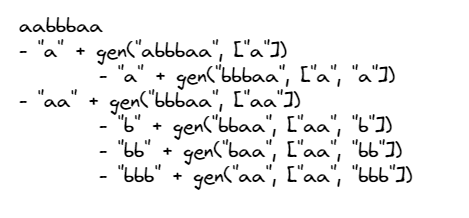

Computers are fast, programmers keep it slow.
– Reddit
Problem Statement
Given a string s, partition s such that every substring of the partition is a palindrome. Return all possible palindrome partitioning of s.
A palindrome string is a string that reads the same backward as forward.
Example 1:
1 | Input: s = "aab" |
Example 2:
1 | Input: s = "a" |
go_figure 🤔
Initial thoughts on the problem statement:
- I need to write a function to check Palindrome
- I see a sub problem. If I solve it, I can bubble up and solve the given problem(It could be dp).
- If I go with point 2, I am covering all cases (I only have to move from left to right)
- I can save solution of substrings in a map, to avoid repitition.
Some pseudo code
1 |
|
The above code will be able to bubble up to the solution

Look at the below code, see if it make sense…
code (js)
1 | var partition = function(s) { |